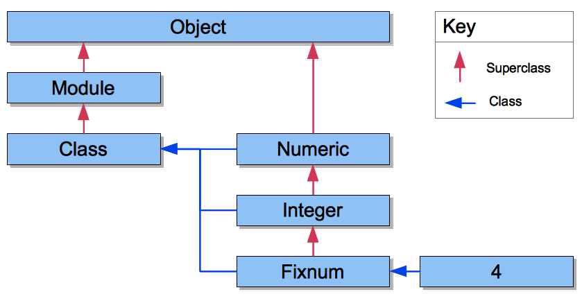

Classes in Ruby act like templates. These templates can have many individual instances, but they share traits or behaviors. For example, let's say we want to create Ruby objects in our program that represent 3 different animals. Each of these animals will have a number of legs, a sound they make, and a favorite type of food. We could create each of these animal objects individually, but since this is Ruby, we can create a CLASS that all 3 of these animals will "inherit" from. Just as plant and animal species are separated and catalogued by their common traits, classes are a way of thinking about individual instances of a collection of traits and behaviors.
There are several built-in classes in Ruby, Strings, Arrays, Fixnum are all examples. These big built-in classes actually inherit from other "superclasses", the "superclassiest" being OBJECT. So we know that if we are creating a new class, we're actually creating a new object.
Here's where it might get a little confusing. A class is an object. But so is every INSTANCE of that class. Let's demonstrate this using a couple examples from the plant kingdom. First, let's adapt an example from Chris Pine's book Learn to Program, and make ourselves a tree.
class Tree
Well that was easy, but we're not done yet. Next we need to use our instance method initialize to create an instance of our tree class. That is to say, we've made a class, now we're going to make a tree, and tell Ruby what exactly a "tree" is. When we initialize a class, we are telling Ruby to assign certain variables to every object of that class type.
If you were a farmer with an apple orchard, for example, you might want a handy way of keeping track of the number of healthy apple trees you had on your property, the heights that they grow to, and the amount of fruit they produce.
class Tree
def initialize
@height = 0
@fruit_yeild = 0
@alive = true
So now we have instance variables that will tell us about the height of the individual tree in class tree, the amount of fruit it yields, and it's health (in this case we're not being too detailed). We want to create our class so that it keeps an accurate count of the apples we have picked (from the live trees only. You can't pick fruit from a dead tree!)
class Tree
def initialize
@height = 0
@fruit_yield = 0
@alive = true
def @fruit_yield
if @alive
@fruit_yield
else"The tree is dead and is not producing fruit."
end
def pick_apple
if @alive
if @fruit_yield > 1
@fruit_yield = @fruit_yield -1
"You have picked one apple."
else
"You have no more apples on this tree."
end
else
"The tree is dead and there is nothing to pick."
end
end
end